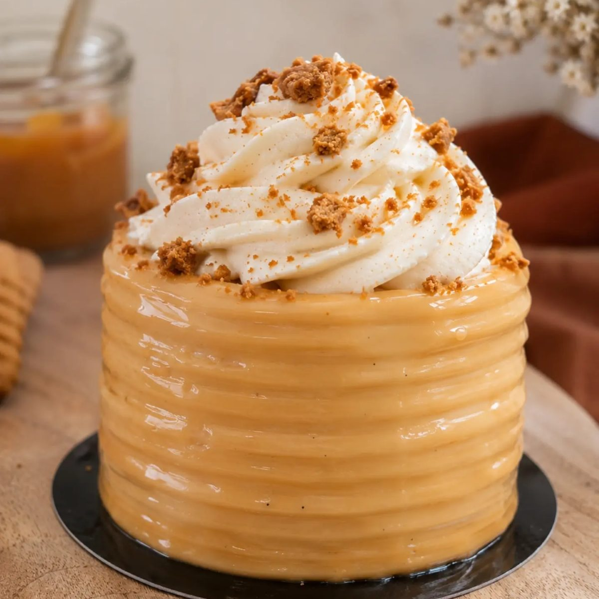
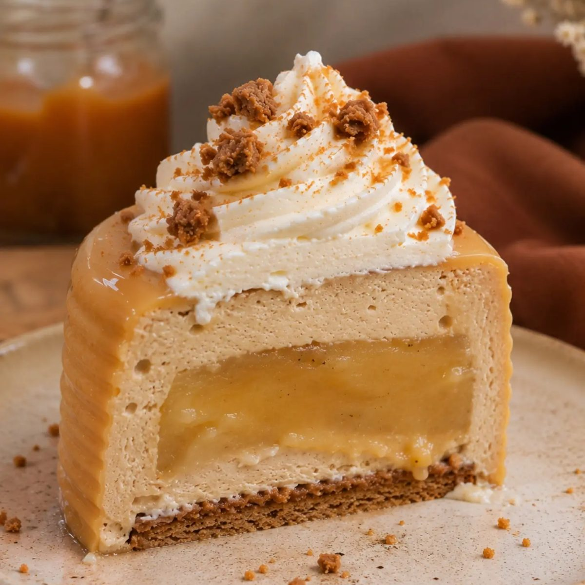

Caramel, banane et spéculoos
Un joli mariage de douceur, de caramel et de spéculoos : une petite bombe de gourmandise.
- Mousse légère au caramel
- Insert fondant à la banane
- Croustillant spéculoos
- Biscuit spéculoos
- Chantilly mascarpone à la vanille et éclats de spéculoos